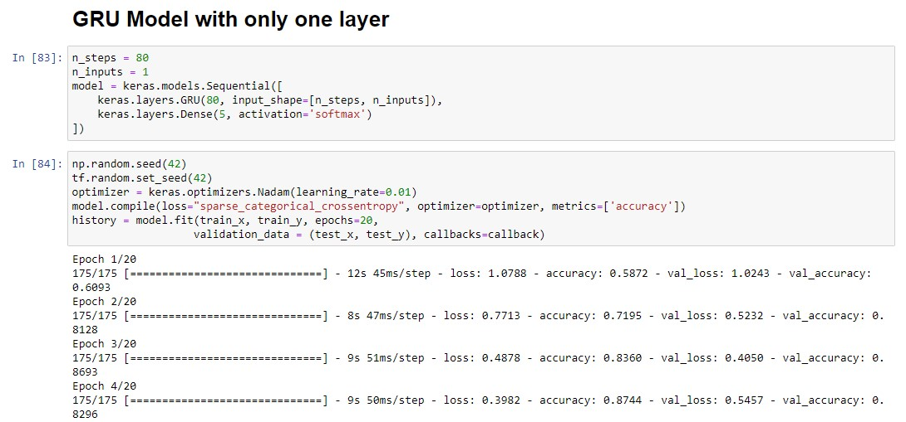
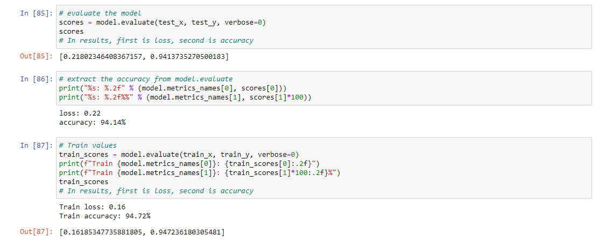
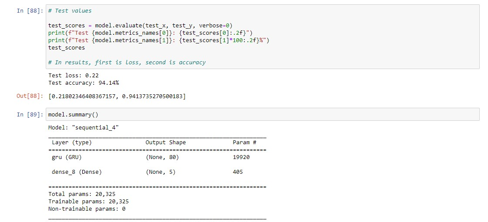
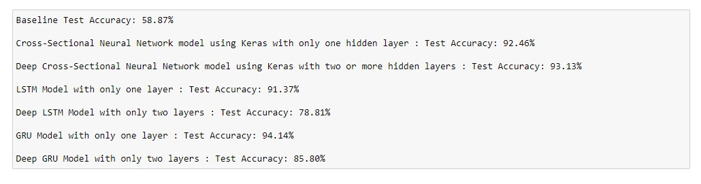
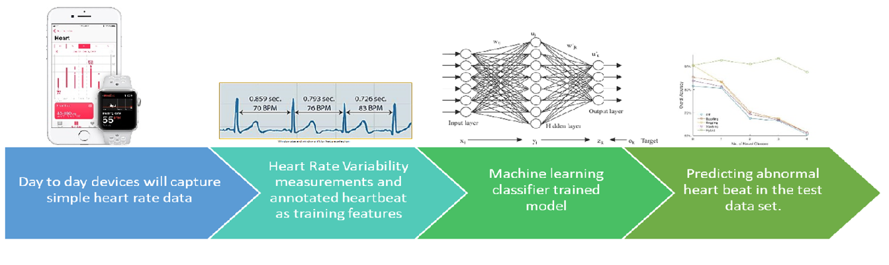

HEARTBEAT PREDICTION USING MACHINE LEARNING

PROJECT OVERVIEW
The project goal was to determine if a measurement represented a typical heartbeat or showed abnormalities such as Normal Heartrate, Supraventricular premature heartbeat, Premature Ventricular contraction, Fusion of a ventricular and normal heartbeat, and Unclassified heartbeat. This project provides a better understanding of model building, predictive analysis, and the importance of adapting model parameters to improve prediction accuracy. It allowed us to uncover valuable information for early detection, risk assessment, treatment optimization, and proactive healthcare strategies. By leveraging these insights, healthcare professionals can make more informed decisions, improve patient care, and ultimately reduce the impact of cardiovascular diseases on individuals and healthcare systems.
ABOUT OUR DATASET
This data set is made available by MIT. It contains data about 9,026 heartbeat measurements. Each row represents a single measurement captured on a timeline. Columns labeled as T1 from T80 are the time steps on the timeline (there are 80 time steps, each time step has only one measurement).The last column is the target variable. It shows the label (category) of the measurement as follows:
0 = Normal
1 = Supraventricular premature beat
2 = Premature ventricular contraction
3 = Fusion of ventricular and normal beat
4 = Unclassifiable beat
TOOLS AND TECHNOLOGIES
Machine learning models and frameworks: Cross-Sectional Neural Networks, LSTM, Deep LSTM, GRU, Deep GRU
Machine learning libraries and frameworks: Keras, TensorFlow, Python, Scikit-learn
Model evaluation and performance metrics: Accuracy Score, Dummy Classifier, Learning rates
Keras optimizer functions: Adam, Nadam
Activation functions: ReLU, softmax
PROJECT WORKFLOW
- Import machine learning libraries: This step involves importing the necessary libraries and frameworks for machine learning, such as scikit-learn, Keras, and TensorFlow.
- Read the dataset: Load and explore the dataset into your program or notebook for your predictive modeling.
- Split Data into Train and Test:: The training data is used to train the machine learning model, while the testing data is used to evaluate its performance.
- Find the target variable: Identifying the target variable in our dataset, which is used for prediction. In this case, it is whether a heartbeat is normal or shows anomalies.
- Check for missing values: Perform data preprocessing steps, including checking for missing values in the dataset and handling them appropriately (e.g., imputation or removal).
- Data transformation: Perform necessary data transformations, In this case, we have converted the Target variables to an array with an integer type. Since Keras expects a different input format which is three dimensions.
- Find Baseline: Establish a baseline performance for your model. We have used accuracy score metrics since it is a multiclass classification task. By finding baseline values, it provides us a benchmark for evaluating the performance of our machine learning models.
- Model Building: Build different machine learning models to predict the target variable. In our case, we have built six other models: Cross-Sectional Neural Network, Deep Cross-Sectional Neural Network, LSTM, Deep LSTM, GRU, and Deep GRU.
- Evaluation: Evaluate the performance of each model using appropriate evaluation metrics. Compare the accuracy values of the models to identify the best-performing one.
- Model selection:Identify the best model by comparing it with the test accuracy score of the model to the baseline accuracy test score.
RESULT AND CODE SNIPPET
Our analysis of various models used to classify heartbeat measurements showed that the GRU model with one layer had the highest test accuracy at 94.14%. It outperformed the baseline by 34% and was able to capture complex patterns easily. This suggests that the model was effective in identifying patterns within the data. Additionally, the Deep Cross-Sectional Neural Network model, utilizing Keras with two or more hidden layers, achieved a high test accuracy of 93.13%. However, this model may be more susceptible to overfitting due to its increased number of parameters. In contrast, the GRU model, a type of recurrent neural network similar to LSTM, has fewer parameters and is quicker to train. Overall, the GRU model with one layer may be the most optimal choice for accurately classifying heartbeat measurements.



PERFORMANCE METRICS
FUTURE BUSINESS IMPLICATIONS AND IMPACT
Developing a predictive model capable of detecting normal or abnormal heartbeats offers immense potential for the healthcare industry. This model can be applied in various real-time scenarios, providing significant benefits:

1. Early Detection of Cardiovascular Diseases: By accurately identifying abnormal heartbeats, the model enables early detection of cardiovascular diseases, allowing healthcare professionals to initiate timely treatments and interventions. For example, a wearable device with the predictive model continuously monitors an individual's heartbeat. If any abnormalities are detected, an alert is sent to the person's healthcare provider, facilitating prompt interventions such as medication adjustments or lifestyle modifications.
2. Improved Patient Care: Integrating the predictive model into healthcare systems or wearable devices enables continuous real-time monitoring of individuals' heartbeats, leading to enhanced patient care. For instance, the model can be integrated into the cardiac monitoring system in a hospital setting. Nurses and doctors receive real-time alerts when a patient's heartbeat deviates from the normal range, enabling prompt medical attention and personalized care.
3. Enablement of Preventive Medicine: The model's ability to identify individuals at a higher risk of developing cardiovascular diseases enables proactive measures and preventive medicine strategies. To mitigate risks and prevent potential complications, healthcare professionals can offer personalized interventions, such as regular check-ups, dietary counseling, and exercise programs. For example, a healthcare clinic implements the predictive model as part of a preventive medicine program, providing targeted interventions to individuals identified as high-risk and promoting overall well-being.
4. Cost Reduction in Healthcare: Early detection and prevention of cardiovascular diseases can lead to significant cost savings in healthcare. By identifying and addressing issues early, the model helps avoid costly emergency treatments and hospitalizations. For example, health insurance companies can utilize the predictive model to identify individuals at high risk of cardiovascular diseases among their policyholders. They can offer proactive health management programs preventive screenings, and ultimately reducing healthcare costs for the insurance company and insured individuals.
5. Advancements in Cardiovascular Healthcare: The data collected and analyzed through the predictive model contribute to ongoing medical research and development, fostering improvements in cardiovascular healthcare. For instance, researchers utilize the model to analyze large-scale cardiac data from diverse populations, uncovering new patterns, trends, and relationships. This leads to the development of more accurate diagnostic techniques and personalized treatment strategies, ultimately improving patient outcomes and advancing the cardiology field.